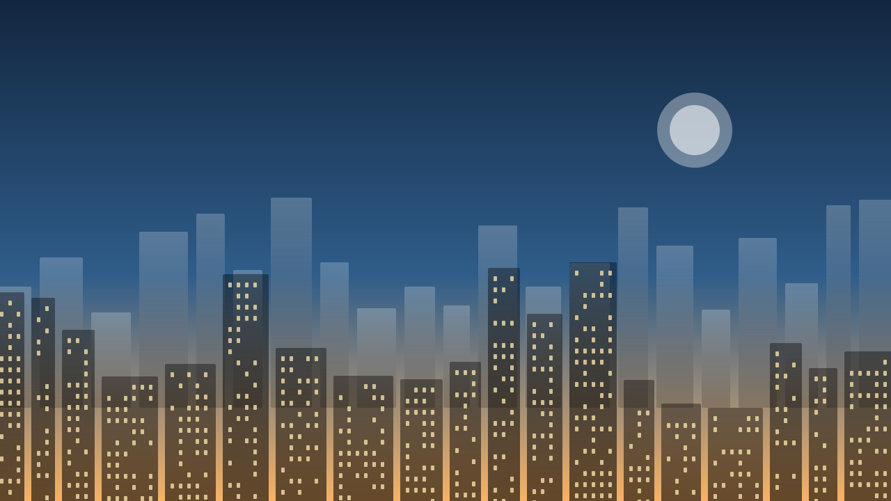

Maratonul orașului revine: peste 4.000 de alergători la start
Traseul trece anul acesta prin centrul vechi, iar înscrierile pentru cursa de 10 km s-au închis în mai puțin de 48 de ore. Tot ce trebuie să știi despre restricții de circulație, puncte de hidratare și programul pe ore.

După doi ani în care traseul a ocolit zona pietonală, organizatorii au anunțat că ediția din această vară revine în inima orașului. Este cea mai mare ediție de până acum: peste 4.000 de participanți înscriși la cele trei curse, dintre care aproape jumătate la proba de 10 kilometri.
Traseul și restricțiile de circulație
Startul se dă din Piața Centrală și urmează bulevardul principal până la parcul de pe malul râului, de unde alergătorii revin pe strada veche. Circulația va fi închisă între orele 07:00 și 15:00 pe următoarele artere:
- Bulevardul Principal, între Piața Centrală și podul de fier
- Strada Veche, pe toată lungimea ei
- Aleea Parcului și accesul dinspre faleză
Transportul public va fi deviat pe rutele ocolitoare, iar liniile 3 și 14 vor circula la interval dublu. Riverani vor putea ieși din zonă pe la punctele semnalizate.
Ne-am dorit de mult să aducem cursa înapoi în centru. Atmosfera de pe strada veche, cu oamenii la ferestre, nu se compară cu nimic.
— Organizatorii cursei
Puncte de hidratare și asistență medicală
Sunt prevăzute șase puncte de hidratare, la fiecare cinci kilometri, plus două corturi medicale — unul la start și unul la kilometrul 21. Voluntarii vor purta veste portocalii și pot fi recunoscuți ușor pe tot traseul.
Programul pe ore
- 07:00 — deschiderea zonei de start, ridicarea kiturilor
- 08:00 — startul cursei de maraton
- 09:30 — startul cursei de 10 km
- 11:00 — cursa copiilor, 1 km
- 13:00 — festivitatea de premiere
Dacă vii cu mașina, cele mai apropiate parcări rămase deschise sunt cea de la complexul sportiv și cea subterană din spatele primăriei. Recomandarea organizatorilor este însă transportul public sau bicicleta — vor fi rasteluri suplimentare lângă start.
Mergi la acest eveniment?
Spune-le și celorlalți — apari în lista de mai jos.
Ioana, Vlad și încă 84 de persoane vor participa.
Discuții și participanți
128 persoane sunt interesate de acest eveniment.
86 persoane au confirmat că vor participa.
- Organizator
- Autor
Foarte bună decizia de a reveni în centrul vechi. Anul trecut traseul de pe faleză era frumos, dar prea puțin public. Sper să fie și anul ăsta muzică la kilometrul 15!
Confirmat, la kilometrul 15 va fi din nou scena cu fanfara. Am întrebat organizatorii ieri.
Super, atunci venim și noi să încurajăm. Se poate ajunge cu căruciorul până la scenă?
Cineva știe dacă se mai pot face înscrieri la cursa de 21 km? La 10 km s-au închis, dar pe site apare încă butonul activ la semimaraton.
Da, mai sunt locuri. Am prins unul aseară, dar cred că se închid în weekend.
Ar fi utilă o hartă a traseului direct în articol. Pentru cei care stau pe Strada Veche, contează mult să știe pe unde pot ieși cu mașina dimineața.